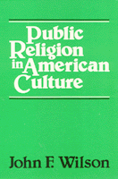

<body bgcolor="#FFFFFF" text="#000000" link="#0000FF" vlink="#CC0000" alink="#CC0000"><center><hr width="350" size="1" align="center" noshade><hr width="350" size="1" align="center" noshade><p><a href="https://cdcshoppingcart.uchicago.edu/Cart/ChicagoBook.aspx?ISBN=9780877221593&&PRESS=temple" target="_top">Buy this book!</a> | <a href="https://cdcshoppingcart.uchicago.edu/Cart/Cart.aspx?PRESS=temple" target="_top">View Cart</a> | <a href="https://cdcshoppingcart.uchicago.edu/Cart/Cart.aspx?PRESS=temple" target="_top">Check Out</a></p><p></p></center><!--none//--><h1>Public Religion in American Culture</h1>
<h3>John F. Wilson</h3>
<P>cloth 0-87722-159-6 $24.95, Jun 79, <FONT COLOR=#990033>Out of Print</FONT>
<BR></P><BLOCKQUOTE><I>"A superb historical-critical study of the use of the concept of civil religion in recent scholarship."</I>
<br>&#151<b><I>Church History</I></b><I></I></BLOCKQUOTE>
<h2>Reviews</h2>
<p><i>"Why is walking a dog different than riding [in] a car? Our connection with animals arises from us having similar bodies, needs, and emotions. Marc Bekoff eloquently stresses this kinship and the sensitivity that comes with it&#151or ought to come with it&#151in a book full of fresh insights into the inner lives of animals."</i>
<br>&#151<b>Frans de Waal</b>, author of <i>Our Inner Ape</i>
<BR>&nbsp;<BR><H2>Subject Categories</H2>
<p><A HREF="/tempress/philosophy.html" TARGET="_top">Philosophy and Ethics</a>
<BR><A HREF="/tempress/american.html" TARGET="_top">American Studies</a>
</p>
<p align="center"><a href="https://cdcshoppingcart.uchicago.edu/Cart/ChicagoBook.aspx?ISBN=9780877221593&&PRESS=temple" target="_top">Buy this book!</a> | <a href="https://cdcshoppingcart.uchicago.edu/Cart/Cart.aspx?PRESS=temple" target="_top">View Cart</a> | <a href="https://cdcshoppingcart.uchicago.edu/Cart/Cart.aspx?PRESS=temple" target="_top">Check Out</a></p><p><font face="Arial" size="1"><a href="copyright.html" onMouseOver="window.status='Web Copyright Policy';return true;" onMouseOut="window.status=''" title="Web Copyright Policy">&copy;</a> 2015 <a href="http://www.temple.edu" target="new" onMouseOver="window.status='Link to Temple University home page';return true;" onMouseOut="window.status=''" title="Link to Temple University home page">Temple University</a>. All Rights Reserved. http://www.temple.edu/tempress/titles/178_reg.html</font></p>